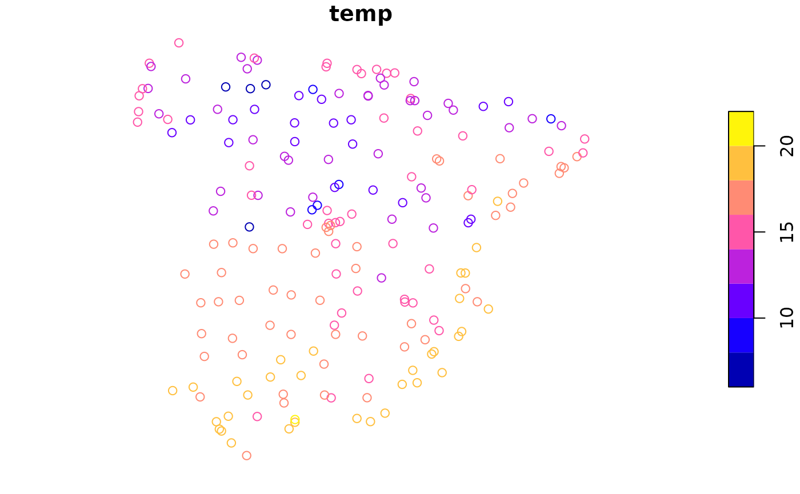
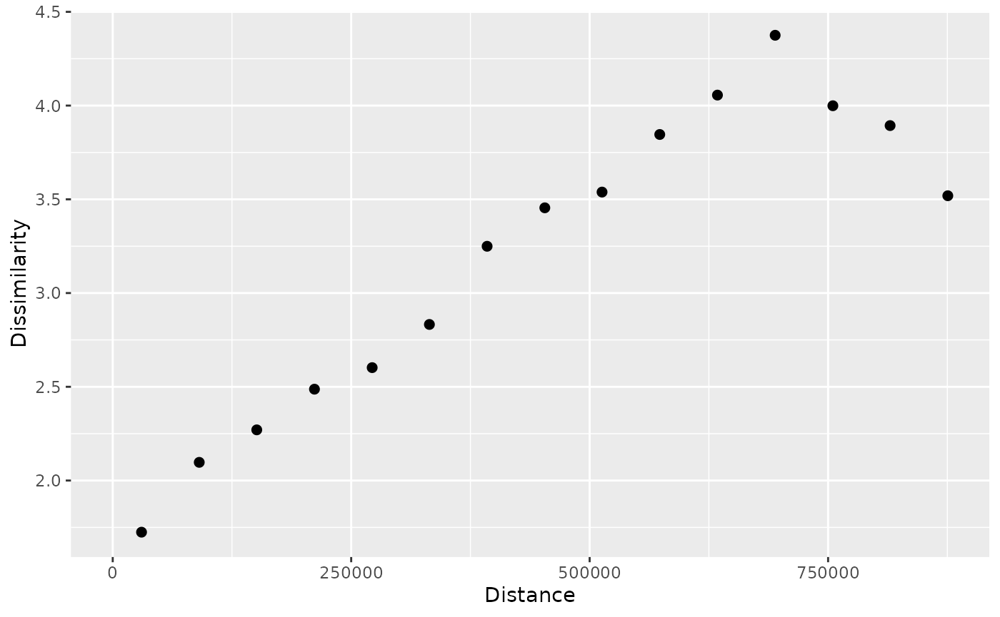
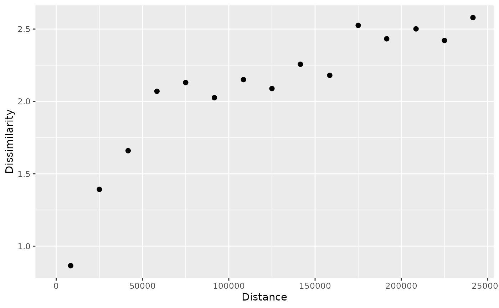
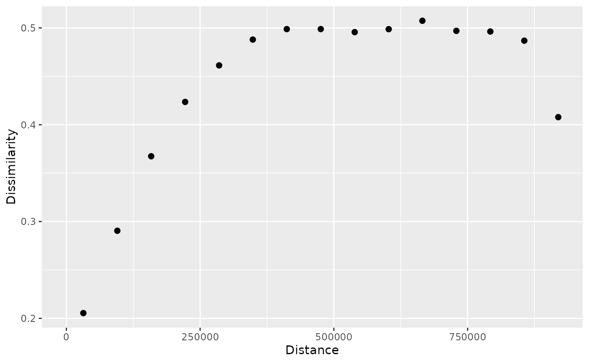
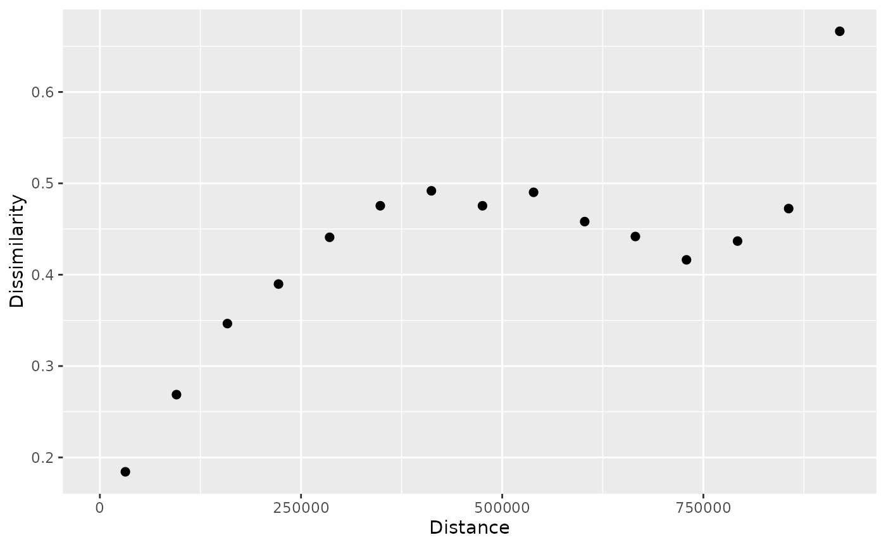
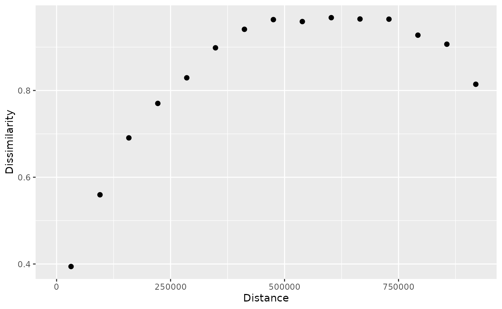
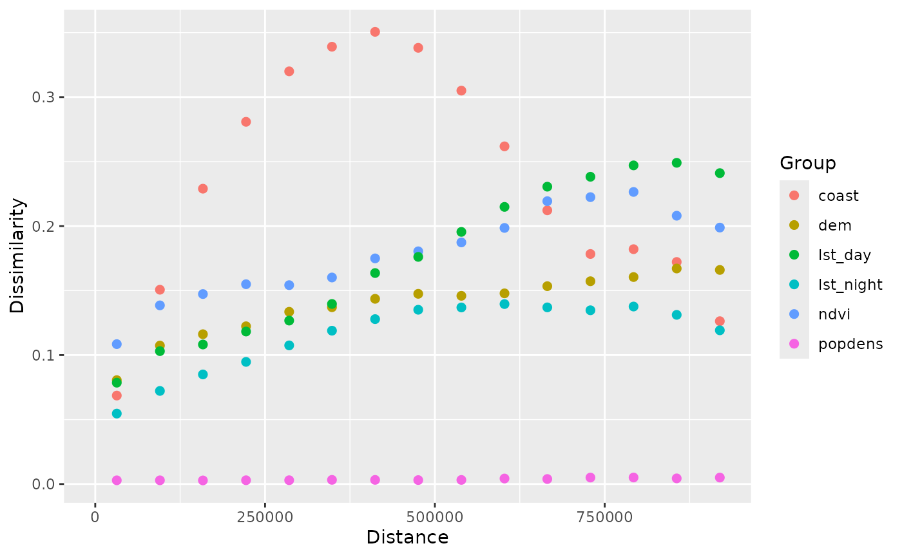

An introduction to patternogram
Jakub Nowosad
2025-12-02
Source:vignettes/articles/an-introduction-to-patternogram.Rmd
an-introduction-to-patternogram.RmdThe patternogram package provides tools for visual exploration of spatial autocorrelation of values from a set of points or a raster object. The patternogram can be used to identify the spatial scale at which the pattern of the points or raster changes and to compare the patterns of different sets of points or rasters. This vignette provides a brief introduction to the package and its main functions.
Let’s start by attaching the necessary packages.
Patternograms of point data
The first dataset is a spatial vector point dataset with annual average air temperature measurements in Celsius for Spain in 2019.
temp_train = read_sf("/vsicurl/https://github.com/Nowosad/IIIRqueR_workshop_materials/raw/refs/heads/main/data/temp_train.gpkg")
plot(temp_train)
The primary function of the package is patternogram().
It calculates the dissimilarity between pairs of points at different
distances, and then groups these dissimilarity estimates into distance
intervals to create a patternogram.
p_tt = patternogram(temp_train)
#> Metric: 'euclidean' with unit: 'log'; comparing: 195 vectors
p_tt
#> # A patternogram: 15 × 3
#> np dist dissimilarity
#> * <int> <dbl> <dbl>
#> 1 334 30200 1.72
#> 2 910 90700 2.10
#> 3 1289 151000 2.27
#> 4 1622 211500 2.49
#> 5 1883 272000 2.60
#> 6 2081 332000 2.83
#> 7 1984 392500 3.25
#> 8 1914 453000 3.45
#> 9 1721 513000 3.54
#> 10 1446 573500 3.85
#> 11 1201 634000 4.06
#> 12 986 694500 4.38
#> 13 763 755000 4.00
#> 14 467 815000 3.89
#> 15 215 875500 3.52The output is a tibble of the patternogram class with
columns np: the number of point pairs in this estimate,
dist: the middle of the distance interval used for each
estimate, and dissimilarity: the dissimilarity estimate.
This object can be plotted using the plot() function.
plot(p_tt)
Such a plot represents a relationship between the distance between points (x-axis) and the dissimilarity of their values (y-axis). Here, we can see that the dissimilarity of temperature values increases with distance up to around 700 km.
We can also specify a cutoff distance with the cutoff
argument to limit the maximum distance considered in the analysis. This
allows us to focus on smaller distances.
p_tt250 = patternogram(temp_train, cutoff = 250000)
#> Metric: 'euclidean' with unit: 'log'; comparing: 195 vectors
plot(p_tt250)
Now, we may notice that the dissimilarity increases quickly up to around 60 km and then still increases, but at a slower rate.
Patternograms of raster data
The second example data is a raster dataset with predictors, such as
population density (popdens), distance to the coast
(coast), elevation (dem), a satellite-based
Normalized Difference Vegetation Index (ndvi), and annual
average composites of the Land Surface Temperature product for day
(lst_day) and night (lst_night).
predictors = rast("/vsicurl/https://github.com/Nowosad/IIIRqueR_workshop_materials/raw/refs/heads/main/data/predictors.tif")
plot(predictors, axes = FALSE)
These variables have different units and ranges of values, so we need to standardize them before calculating the patternogram. Otherwise, the variables with larger ranges will dominate the dissimilarity calculations. To standardize the variables, we can use min-max normalization, which rescales the values of each variable to a range between 0 and 1.
nx = minmax(predictors)
pr = (predictors - nx[1, ]) / (nx[2, ] - nx[1, ])Now, we can calculate the patternogram for the standardized raster
data using the same patternogram() function.
p_pr = patternogram(pr)
#> Metric: 'euclidean' with unit: 'log'; comparing: 500 vectors
p_pr
#> # A patternogram: 15 × 3
#> np dist dissimilarity
#> * <int> <dbl> <dbl>
#> 1 2897 31700 0.205
#> 2 7554 95200 0.290
#> 3 10904 158500 0.367
#> 4 13449 222000 0.424
#> 5 14601 285500 0.461
#> 6 14888 348500 0.488
#> 7 14139 412000 0.499
#> 8 13193 475500 0.499
#> 9 10958 539000 0.496
#> 10 8380 602500 0.499
#> 11 6280 665500 0.507
#> 12 3873 729000 0.497
#> 13 2152 792500 0.496
#> 14 968 856000 0.487
#> 15 382 919500 0.408
plot(p_pr)
Both the output tibble and the plot are similar to those for point data.
In the background, the function randomly samples 500 points from the raster to calculate the dissimilarity between pairs of points at different distances.
We can change the sample size using the sample_size
argument – smaller sample sizes will result in faster calculations but
may be less stable.
p_pr_np = patternogram(pr, sample_size = 50)
#> Metric: 'euclidean' with unit: 'log'; comparing: 50 vectors
plot(p_pr_np)
By default, the function uses the squared Euclidean distance to
calculate dissimilarities between points. It means that each point
values (in this case six values of six raster layers) are compared to
another point values using the Euclidean distance formula. However, we
can change the dissimilarity measure using the dist_fun
argument to other suitable measures, depending on the data and the
research question. In the example below, we use the Manhattan
distance.
p_pr_dist = patternogram(pr, dist_fun = "manhattan")
#> Metric: 'manhattan' with unit: 'log'; comparing: 500 vectors
plot(p_pr_dist)
Finally, we can calculate and plot patternograms for each raster
layer separately using the group = TRUE argument.
p_pr_l = patternogram(pr, group = TRUE)
#> Metric: 'euclidean' with unit: 'log'; comparing: 500 vectors
#> Metric: 'euclidean' with unit: 'log'; comparing: 500 vectors
#> Metric: 'euclidean' with unit: 'log'; comparing: 500 vectors
#> Metric: 'euclidean' with unit: 'log'; comparing: 500 vectors
#> Metric: 'euclidean' with unit: 'log'; comparing: 500 vectors
#> Metric: 'euclidean' with unit: 'log'; comparing: 500 vectors
plot(p_pr_l)
This allows us to compare the spatial patterns of different variables in the raster dataset.
Summary
This document provided a brief introduction to the patternogram package and its main functions. For more expanded examples and explanations, see the second vignette: Customizations in patternogram.